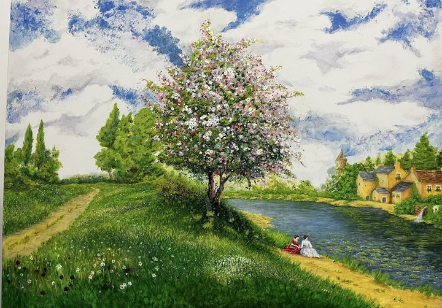
Guarda da vicino ↗Confidenze di Maggio
May Confidences450 €+ 100 € spedizione
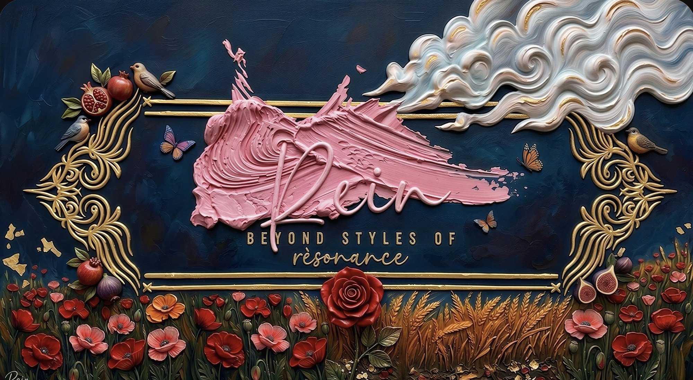
Dove l'anima vulcanica della Sicilia incontra la luce dell'Impressionismo francese.
«Ogni tela è un momento intimo: un legame silenzioso tra me, il pennello e il colore.»Rein
Collezione 2026
Originali unici, dipinti a mano in acrilico e firmati. Tocca un'opera per vederla da vicino, nei dettagli e ambientata in un salotto.

Guarda da vicino ↗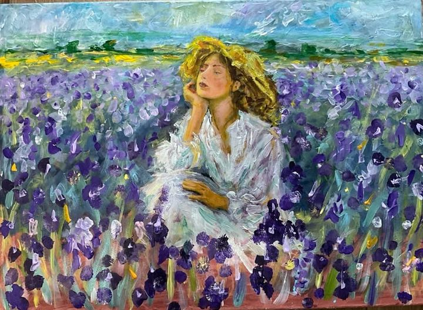
Guarda da vicino ↗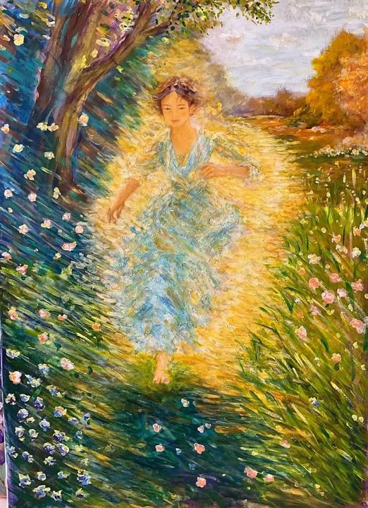
Guarda da vicino ↗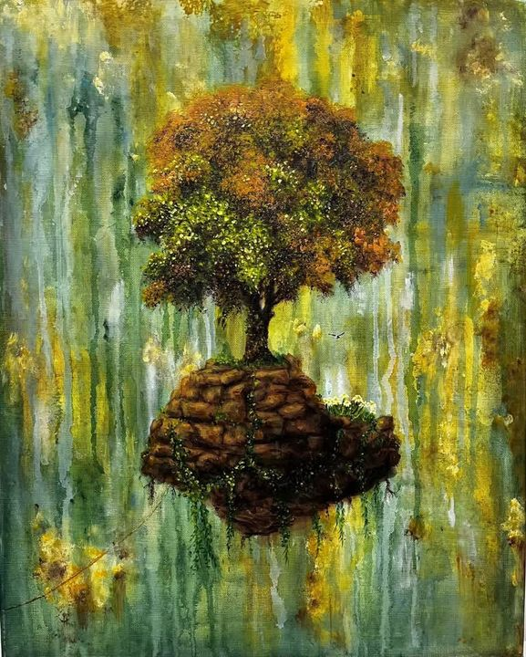
Guarda da vicino ↗L'albero che abita l'isola non è il più grande né il più forte. È semplicemente sopravvissuto. La corda, ancora l'isola. Un approdo…
Dittico ideale con «Aurora»
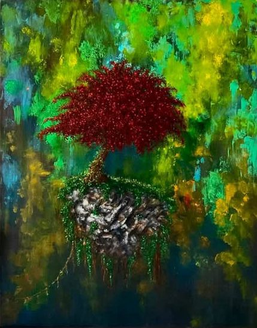
Guarda da vicino ↗Un albero o un fuoco silenzioso. L'isola trattiene il respiro.
Dittico ideale con «Dove finisce il vento»
Acquerello e matita su carta
Fogli unici dipinti ad acquerello e matita: il gesto più immediato, la trasparenza del colore, la carta che respira. Ogni foglio è un originale firmato.
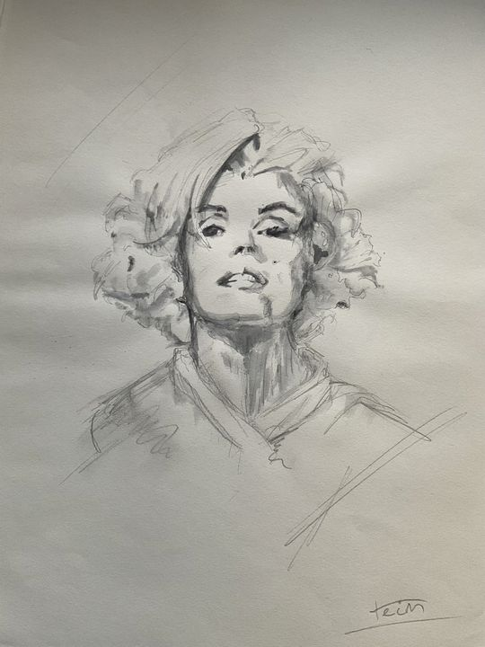
Guarda da vicino ↗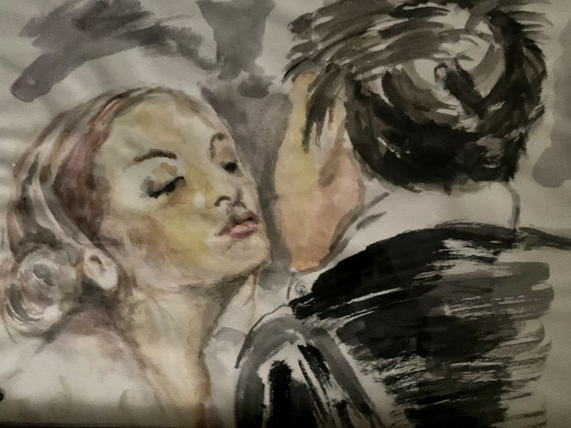
Guarda da vicino ↗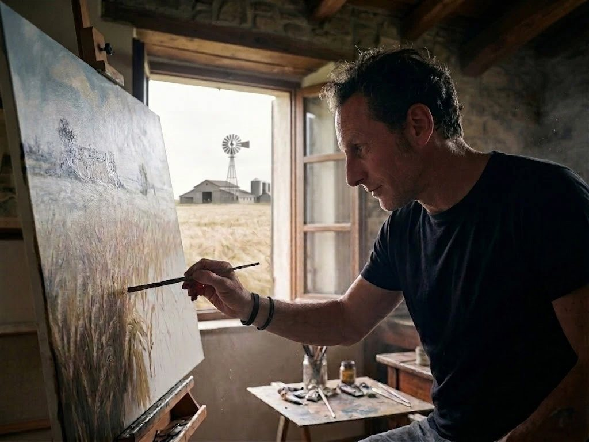
L'artista
Ho 53 anni e vivo in Sicilia. Sono un autodidatta: nessuna accademia, solo anni di pittura e di scultura imparate con le mani, la pazienza e lo sguardo.
Quando lavoro, il mondo intorno si spegne. Resta la passione, che diventa un legame profondo tra me, il pennello e la tela: un momento intimo, quasi un dialogo silenzioso.
Amo la storia francese e da sempre mi affascina la vita di Maria Antonietta: la luce dei giardini di Versailles, l'eleganza e la malinconia di un'epoca. Nei miei quadri quella luce incontra l'anima vulcanica della mia terra. È da questo incontro che nasce la mia pittura: beyond styles of rèsonance, oltre gli stili, alla ricerca di una risonanza.
Rein
L'app dell'artista
Paintstep è l'app gratuita che ho ideato per chi vuole imparare a dipingere. Carichi l'immagine di un dipinto e l'app la scompone negli step di un vero pittore, suggerendo per ogni passaggio i colori, le miscele e i pennelli.
Gratis · 5 lingue · funziona nel browser, la tua immagine non lascia il dispositivo
Dietro le quinte
Dalla prima linea a matita all'ultima pennellata: sei fasi per scoprire come nasce un'opera.
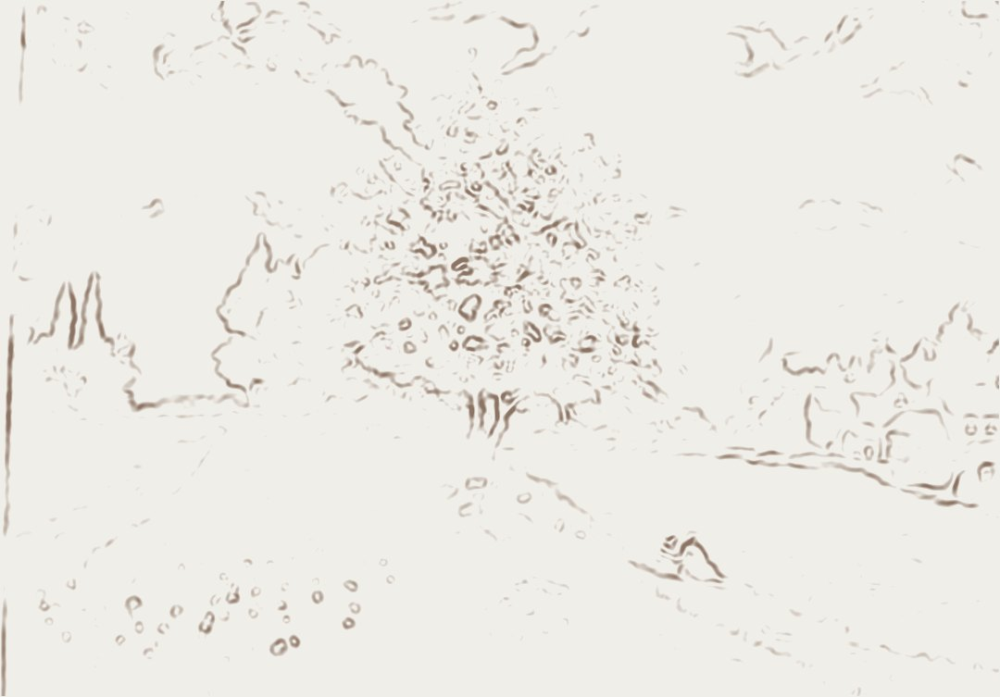
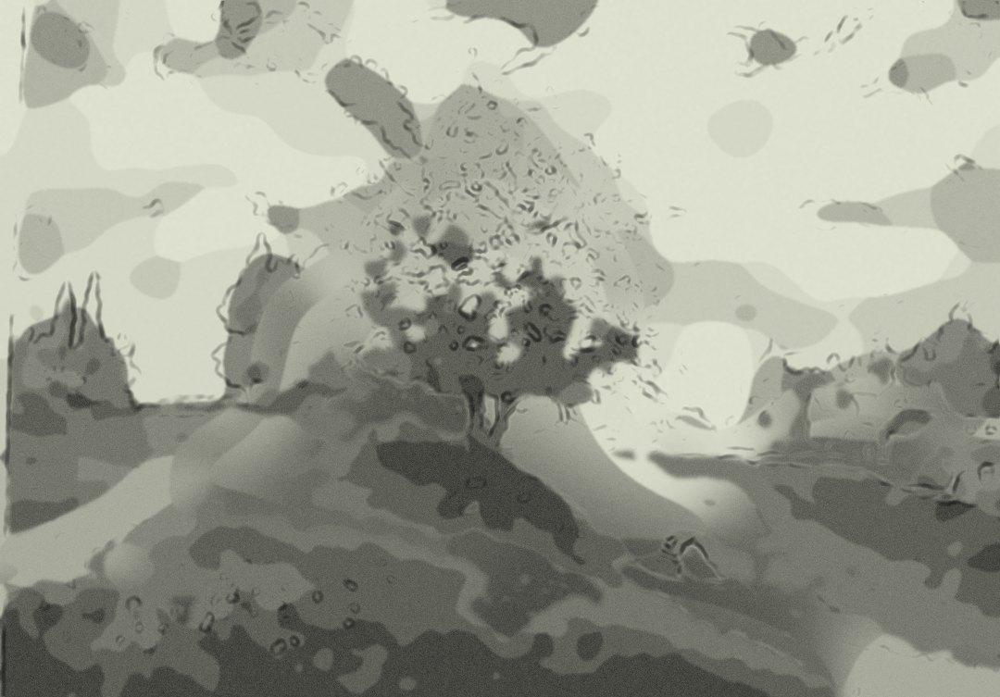
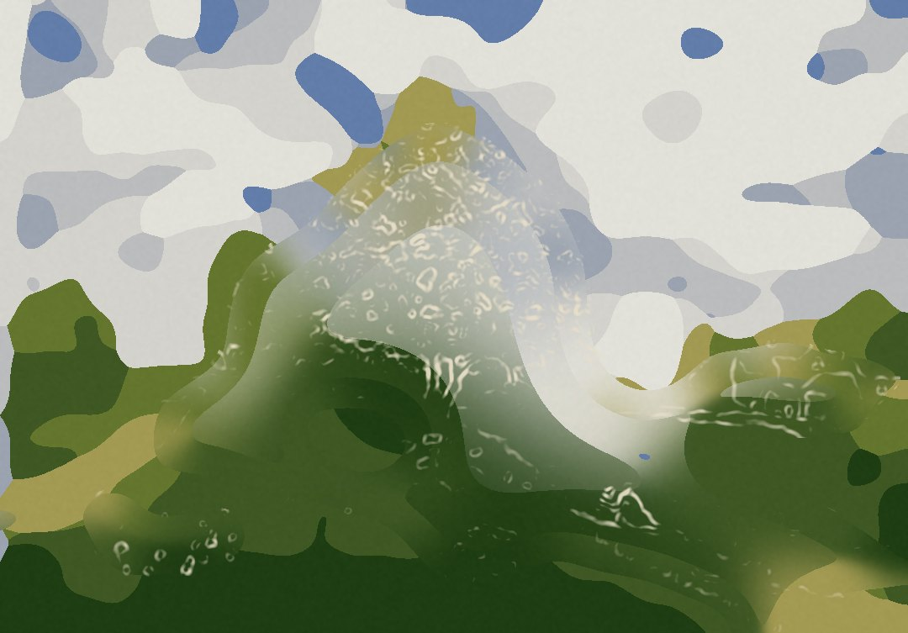
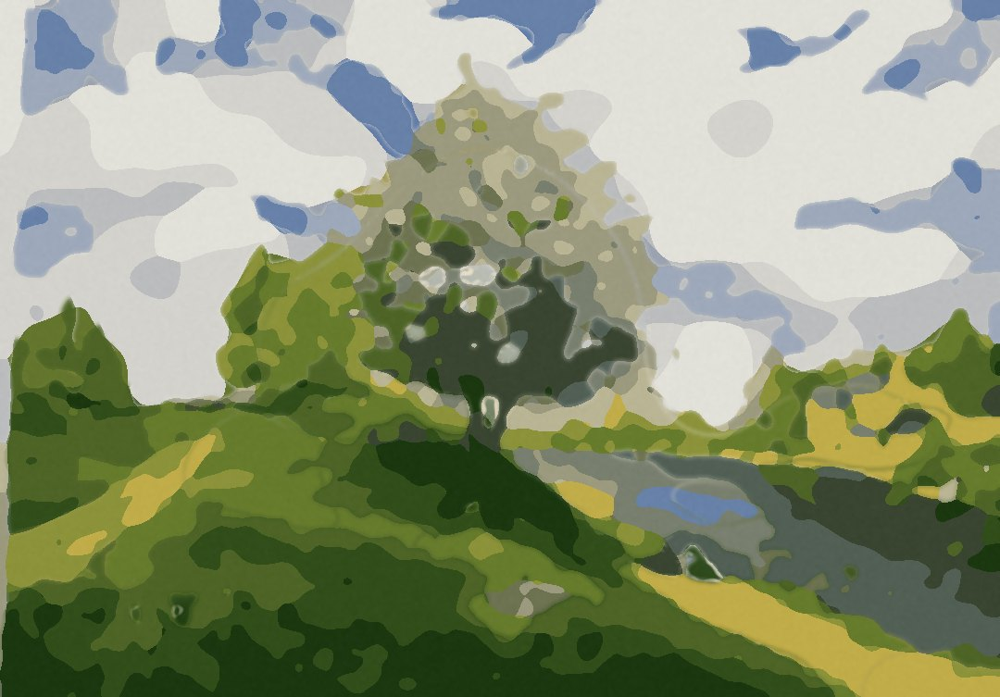
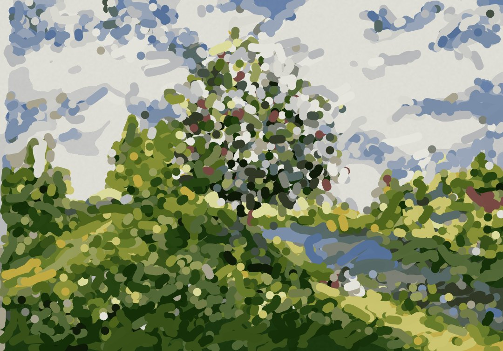
L'idea prende forma sulla tela: pochi segni leggeri per fissare la composizione e le proporzioni.
Le linee si definiscono, le ombre si costruiscono: il disegno diventa struttura e decide dove vivranno i toni scuri.
Le prime macchie di colore appaiono sulla tela: il cielo, i verdi, le prime intuizioni di luce e atmosfera.
Il paesaggio si arricchisce: cielo, terra e acqua dialogano tra loro e le masse prendono forma.
La pennellata si fa più densa e decisa: i fiori si accendono, la materia prende vita.
L'opera è compiuta: ogni dettaglio è un gesto irripetibile, ogni texture una firma d'artista.
Le fasi sono ricostruite con Paintstep, l'app gratuita di Rein, partendo dall'opera finita. Scopri Paintstep →
Contatti
Per informazioni su un'opera, una dedica, o semplicemente per parlare di pittura. Rispondo personalmente.
Acquisto